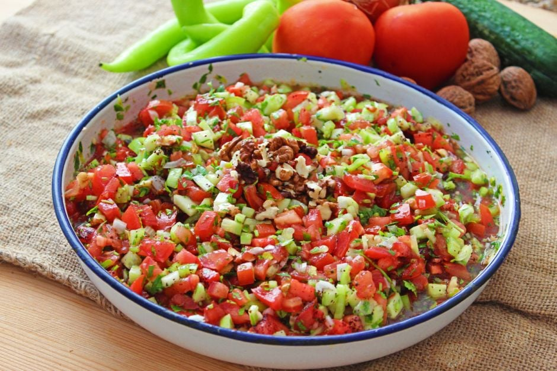

Çoban Salata
Çoban salatası, Türk mutfağına ait bir salata türüdür. Domates, salatalık, yeşil biber, taze soğan, beyaz peynir, siyah zeytin ve taze otlar gibi malzemelerle hazırlanır. Zeytinyağı, limon suyu, tuz ve karabiber içeren basit bir sos ile lezzetlendirilir. Yaz aylarında taze malzemelerle yapılan bu salata, hafif ve ferah bir seçenek olarak bilinir.
Gavurdağı Salata
Gavurdağı salatası, Türk mutfağına ait bir salata çeşididir. Domates, salatalık, yeşil biber, taze soğan, maydanoz ve ceviz içeren bu salata, zeytinyağı, nar ekşisi, tuz ve kırmızı biber salçası ile tatlandırılır. Yaz aylarında taze malzemelerle yapılan bu lezzetli salata, genellikle kebaplar veya et yemekleri ile birlikte tercih edilir.
Antep Ezmesi
Antep ezmesi, Gaziantep mutfağına özgü bir mezettir. Temel malzemeleri arasında Antep fıstığı, nar ekşisi, biber salçası, sarımsak, pul biber, zeytinyağı ve baharatlar bulunur. Yoğun Antep fıstığı aroması, baharatlı ve hafif acılığı ile dikkat çeker. Genellikle kahvaltılarda veya mezelerde tüketilen bu lezzetli ezme, çeşitli ekmek çeşitleri, lavaş veya taze sebzelerle birlikte servis edilir.
Akdeniz Salata
.jpg)
Akdeniz salatası, taze domates, salatalık, yeşil biber, kırmızı soğan, siyah zeytin, beyaz peynir ve taze otlar içeren bir salata türüdür. Zeytinyağı, limon suyu, tuz ve karabiberle yapılan basit bir salata sosu ile tatlandırılır. Yaz aylarında tercih edilen hafif ve sağlıklı bir salata çeşididir.
Yoğurtlu Semizotu Salata
Yoğurtlu semizotu salatası, taze semizotu ile yoğurdun harika bir uyumunu sunan hafif ve sağlıklı bir salata çeşididir. Semizotu doğranarak yoğurtla karıştırılır, üzerine tuz ve zeytinyağı eklenir. İsteğe bağlı olarak sarımsak veya nar ekşisi de kullanılabilir. Yaz aylarında tercih edilen bu salata genellikle yanında taze ekmek veya pide ile servis edilir.